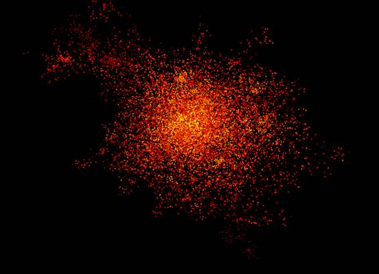

Visual Exploration of Multi-faceted Halo Data Sets
Xiaotong Liu and Meraj Khan
Liu.1952@osu.edu, khan.485@osu.edu
Department of Computer Science and Engineering
The Ohio State University
1. Introduction
Cosmological simulations follow the formation of nonlinear structure in dark and luminous matter. In the Dark Sky Simulations project, each simulation is typically evolved over 14 billion years from very small fluctuations in an otherwise uniform distribution, using gravitational N-body integrators in an expanding background Universe. The particles in cosmological simulations cluster into gravitationally bound structures that pull in baryonic matter that form stars, galaxies, and clusters of galaxies.
One fundamental research topic in cosmological simulation is the visualization of halos that are formed by particles and defined by mass, position, and velocity and a set of additional properties of the halo, such as angular momentum, characteristic radius, spin parameter. These multi-faceted attributes complicate the exploration of halos in such high dimensional data space, as it requires investigating the multiple dimensions and their specific values to understand the multi-faceted properties of the halos.
Our goal of this work is to design a visualization framework that assists users to analyze the multi-faceted properties of the halos for visualizing halos of interest in cosmological simulations. A multi-faceted view of halo properties can reveal the relationships between the facets and prompt selecting of interest. We propose to combine multi-dimensional visualization techniques and particle visualization to support visual exploration of multi-dimensional halo data sets. We expect to provide linked views of the halos as well as their multi-faceted properties. Various interactions such as zooming and filtering will also be supported to allow users to explore the subspace of the data sets.
2. Data set
In this work, we use the IEEE VIS contest data set in 2015, which consists of three primary data types: the raw particle data, the Halo catalog data, and the merger tree data.
First, the raw particle data contains a position vector, velocity vector, and unique particle identifier. There are approximately 100 time steps, each stored in the SDF. This format is composed of a human readable ASCII header followed by raw binary data.
Second, the Halo Catalog data groups sets of gravitationally bound particles together into coherent structures. It has the information about a given halo¡¯s position, shape, and size, are a number of statistics derived from the particle distribution, such as angular momentum, relative concentration of the particles, and many more. These catalogs are stored in both ASCII and binary formats.
Third, the Merger Tree data links the individual halo catalogs that each represents a snapshot in time, thereby creating database. Each merger tree forms a sparse graph that can then be analyzed to use quantities such as halo mass accretion and merger history to inform how galaxies form and evolve through cosmic time. Merger tree data are also distributed in both ASCII and BINARY formats.
3. Tasks
The main task to address in this work is to visualize the multi-faceted halo properties for exploring and comparing halos in cosmological simulations. The particles that compose a halo, which are defined by mass, position, and velocity, are used to derive additional properties of the halo such as angular momentum, characteristic radius, and spin parameter. Given many halo properties, users may have varying interest in exploring halos of varying property combinations. To navigate through such rich data, one can rely on search technologies to find relevant information. Search tools typically return a ranked list of entities whose content is highly related to a set of user-supplied range queries. However, without sufficient prior knowledge, the query specification can be difficult as the enormous multidimensional space complicates the search of potentially interesting halos. This high-dimensional property space poses a challenge to analysis tasks where users try to understand and compare different halos that are described by multiple properties. To enable easy query specification for selecting halos of interest, users need to examine the value distributions of the halo properties as well as their relationships. Therefore, visualizations that aid users to view and compare halo properties and the relationships of the properties are of great importance.
Furthermore, the latency of interaction, namely, how much time it takes for the system to respond to the user action, matters for a smooth exploration process. Due to the large number of halos, responsive and flexible interaction schemes are required to allow users to zoom into the subspace of data sets with acceptable latency.
4. System Overview
We propose to combine multi-dimensional visualization techniques and particle visualization to support visual exploration of multi-dimensional halo data sets. As shown in Figure 1, our system has three major views: the PCP view, the Property view and the Halo view.
Figure 1: An overview of the proposed visualization system.
5. Visualization Design
In this section, we describe the design considerations and choices in our visualization system in detail.
5.1 PCP view
We employ parallel coordinates plot (PCP) to visualize the multi-faceted halo properties in the PCP view. PCP is a common way of visualizing high-dimensional data, representing a point in multiple-dimensional space as a polyline with vertices on parallel axes, where the position of the vertex on an axis corresponds to the value of that dimension. In our design, each axis corresponds to one property of the halo, and the point at which the polyline intersects represents the value of the point in that property. An example of the PCP view is illustrated in Figure 2. One challenge in designing the PCP view is to enable responsive interaction via brushing and linking, as a conventional PCP often gets less responsive with thousands of polylines. To solve this, we resort to progressive rendering. This is done by arranging all the multi-dimensional data points in a queue, rendering a subset of the data points per frame, and progressively building up the final rendering result.
Figure 2: an illustration of the PCP view.
Our system provides various interactions in the PCP view. On the one hand, users can brush an axis to specify a range of interest, and polylines that fall within the range will be highlighted, as shown in Figure 3.
Figure 3: brushing the PCP to focus on a subspace of halos via range query.
In addition, users can reorder the dimension axes by dragging an axis to a different position. This helps to focus on different pairs of neighboring axes, as illustrated in Figure 4.
Figure 4: reordering the dimension axes in the PCP view.
5.2 Property view
The property view (Figure 5) shows the exact values of the properties in an interactive table, where columns are properties and rows are halos. It allows users to select one row to examine the numerical properties of the particular halo, while the corresponding polyline is highlighted in the PCP view, as shown in Figure 6. On the other hand, brushing the PCP axes also highlights the selected polylines in the Property view (Figure 7). The rows can be sorted in either increasing or decreasing order of any dimension, when clicking the header of the corresponding column.
Figure 5: an illustration of the Property view.
Figure 6: highlighting a halo of interest in the PCP view when selecting a row in the Property view.
Figure 7: highlights the selected halos in the Property view when brushing in the PCP view.
5.3 Halo View
Once users select the halos of interest in the PCP view and the Property view, the Halo view (Figure 8) provides users with the most direct and intuitive view of the halo structures using particle rendering. For a certain halo, the particles that fall into the radius of the halo are shown.

Figure 8: an illustration of the Halo view.

Figure 9: the control panel in the Halo view.

Figure 10: optional color maps in the Halo view.
// todo: add the halo part
These three views are linked together to support the exploration process: users can brush the PCP view and manipulate the property view to select halos of interest in a subspace, and examine the corresponding halo structures in the halo view.
6. Implementation
Yt.py is used to read and process the raw particle data in SDF format. Yt.py is a python package for analyzing and visualizing volumetric, multi-resolution data from astrophysical simulations, radio telescopes, and a burgeoning interdisciplinary community. It can seamlessly handle simulation output files to enable effective analysis.
H5.py is used for analyzing halo particle dump. H5.py is a python-based interface to process the HDF5 binary data.
D3.js is used to create the PCP view, and support interactions such as brushing and linking. D3.js is a JavaScript library for manipulating documents based on data, which has various visualization components and a data-driven approach to DOM manipulation on Web.
WebGL is used to render the halos in the Halo view, and support interactions changing camera position and orientation of the view, and controlling the color and opacity of the halos. WebGL (Web Graphics Library) is a JavaScript API for rendering interactive 3D computer graphics and 2D graphics, which can be mixed with other HTML elements and composited with other parts of the page or page background.
7. Discussions and Future Work
With our visualization system, we explore the halos in the final time step of the IEEE VIS contest data set in 2015.
8. Conclusion
In this work, we ¡
Supplemental Video
The user interface and interactive operations are also demonstrated in a video that accompanies this manuscript.
Appendix: Role of the Team
For the system development, Xiaotong Liu implemented the PCP view and the Property view, while Meraj Khan developed the Halo view and handled the server-side data loading and preprocessing.